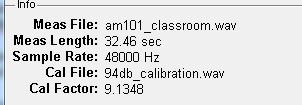

Load Cal .wav
Load Calibration .wav
The user should use the "Load Cal .wav" button to load a .wav file that has a calibration recording.
After pressing the Load Cal .wav button a dialog opens to let you select the calibration recording to load. The program then prompts for the calibration level in dB. The program then computes the RMS value of the calibration file and sets the cal factor for the system accordingly.
Only the first 30 seconds of a calibration file will be analyzed. If the calibration file has multiple channels only the 1st channel is analyzed. Calibration files must be .wav format files at a sample rate of 22.05 kHz, 44.1 kHz, 48 kHz, or 96 kHz
Usually the calibration file is a recording from a sound level calibrator which will have a sound level of 94, 114 or 124 dB.
The calibration file name and the calibration factor are displayed in the info section of the main screen:

Copyright © 2011, Ralph T. Muehleisen
Created with the Freeware Edition of HelpNDoc: Easily create HTML Help documents